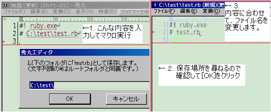

Download
Download


SaveasEx.mac by taketori

秀丸エディッタ用のマクロです。
ファイルの最初の方に記載された、ファイル名と思わしき文字列を利用して「名前を付けて保存」します。
秀丸の「名前を付けて保存」では、ファイル名候補としてファイル1行目の文字列が表示されますが、その機能をもう少し便利にしたものです。
詳細は、README.txtを参照してください。
Dependencies
以下のような環境が必要です。他にもあるかもしれませんが、一般的なユーザなら多分大丈夫でしょう。
秀丸エディッタ Ver 8以上が動作する。
COM・秀丸エディッタ同梱のDLL・cmd.exeなどの呼び出し・実行できる権限がある。
マクロ本体が存在するフォルダ及びそこに存在するファイルに対して、読み取り・実行・書き込みなどができる権限がある。
「フォルダ情報を記載したファイル」を、マクロ(というか秀丸エディッタ）から読み出すことができる権限がある。
Install
・他の秀丸エディッタ用のマクロと同様です。配布ファイルに含まれる全てのファイルを、同じフォルダに展開してください。
・「フォルダ情報を記載したファイル」を必要に応じて作ってください。
サンプルは、配布ファイル同梱のmount.info.sampleを参照してください。
自動で作るには、cygwinをインストールしてから、「echo [mount] > mount.info; mount | sed -re 's/^([^\/]+) on (\/[^ ]+) .+/ = /g' >> mount.info」みたいな感じで。
・使い方、設定方法は、同梱のマニュアルSaveasEx.mac.txtをご覧ください。
・バージョンアップ時の注意
ユーザ設定は、マクロ自体に書き込みます。従って、マクロをインストールするたびに設定し直す必要があります。
・アンインストール時のお知らせ
レジストリには書き込んでいません。また、マクロと同じフォルダ以外にはファイルを作りません。
License
著作権は、私 "たけとり"、"taketori"、及び "x10d.jp" が2009年から保有しています。
ライセンスは、いわゆる「修正BSD」です。
詳細は、README.txtを参照してください。
Authors
taketori (dm1 at x10d.jp)
Contact
メールや掲示板でお問い合わせの際は、本マクロについてであることがわかるように、題名にマクロ名を併記してください。
・メール
src＠x10d.jp (＠を半角に変更してから送信してください。)
・掲示板: コミュニテックス「4. 公開マクロ サポート会議室（秀丸エディタ関連）」
http://www.maruo.co.jp/turukame/4/index.html
・githubのレポジトリ
http://github.com/taketori/SaveasEx.mac/
Issuesもどうぞ。
Download
You can download this project in either zip or tar formats.
You can also clone the project with Git by running:
$ git clone git://github.com/taketori/SaveasEx.mac